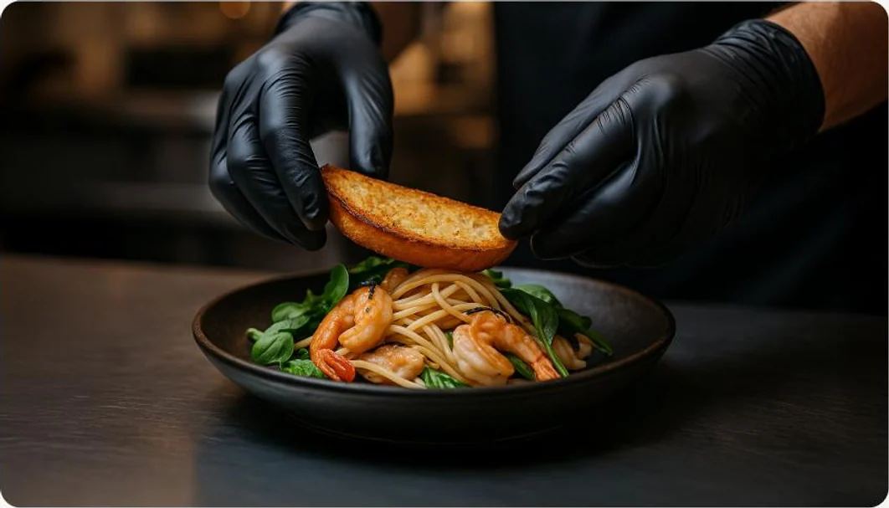
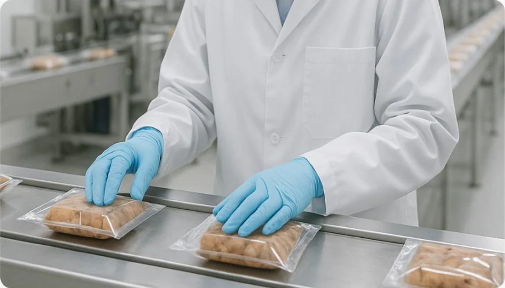
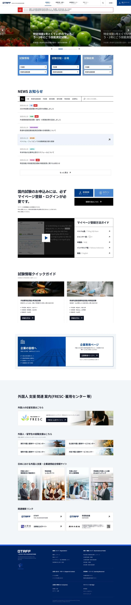

About the project
OTAFF (Organization for Technical Skill Assessment of Food Industry) runs Japan’s Specified Skilled Worker tests for food service and food and beverage manufacturing. Its website is where foreign candidates, schools and employers find everything they need to take part.
The home page opens on exam announcements and a carousel of upcoming tests, then three clear entry points — exam information, schedules and venues, and results — each split by industry. Below sit the news feed, the My Page sign-up guide, quick guides to each test, a dedicated page for companies, and links to support centres for foreign residents.
A calm navy-and-blue palette, generous white space and the clean forms of Noto Sans JP keep dense, bilingual information easy to scan and give the organisation the trustworthy, public-service feel it needs.
- Project Type
- UI Design
- Year
- 2023
- My Role
- UI Designer
- Client
- OTAFF


Typography & Colour
NOTO SANS JP
- Light
- Regular
- Medium
- Bold
- 16
- 20
- 24
- 32
- 48
- 64
- #003C88
- #4A86D2
- #222222
UI Design
